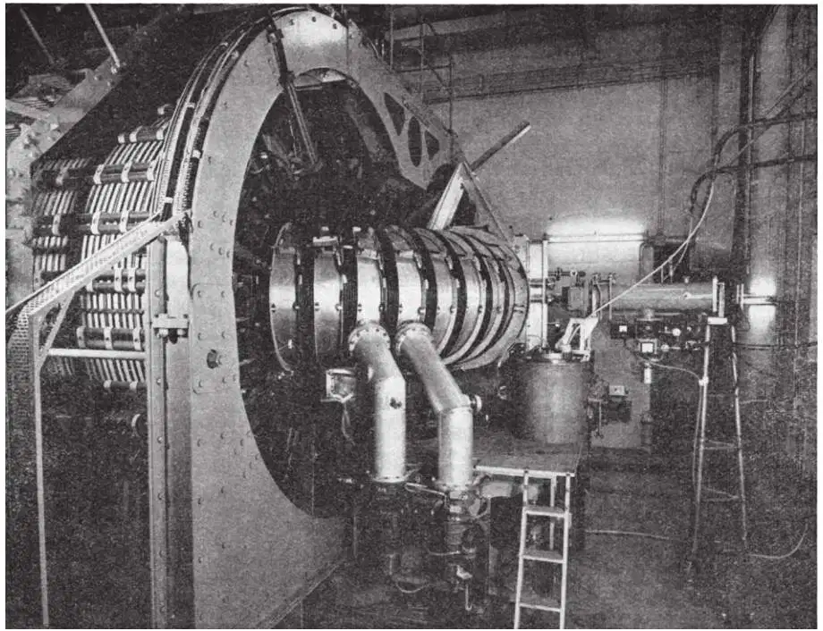
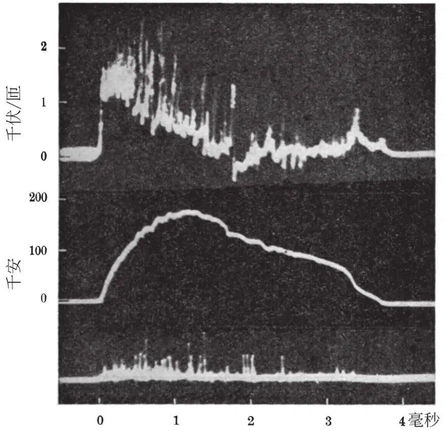
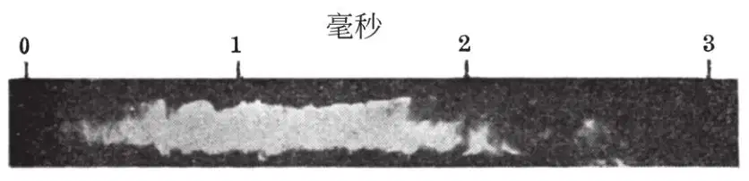
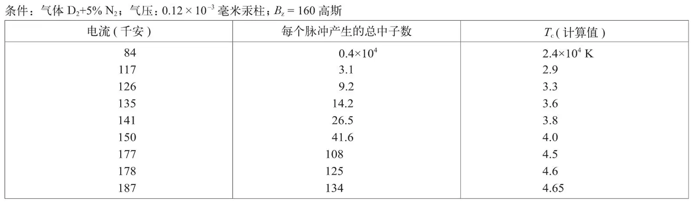
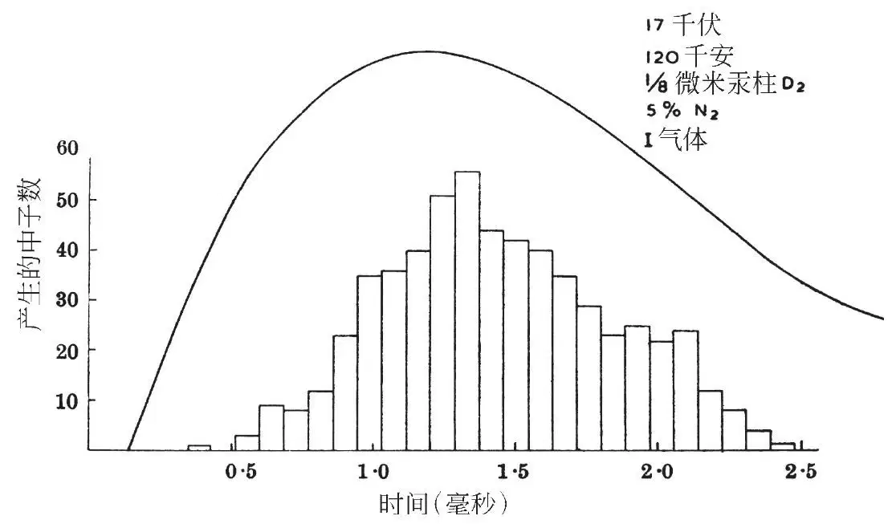
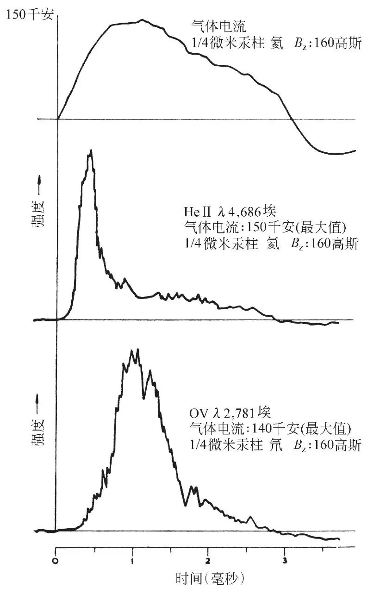
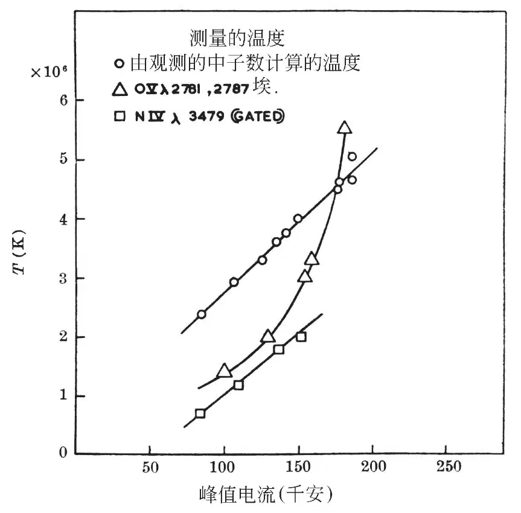

英文
英文索恩曼等
编者按
1952年第一颗氢弹爆炸，其能量来自核聚变而不是核裂变。两年后，物理学家开始尝试将可控的核聚变引入实验室。本文中彼得·索恩曼及其同事报道了最初的实验，在实验中他们使用一个叫ZETA的装置，这个装置是一个直径为3米并装有稀薄等离子体的环形腔。他们试图通过强大的电流爆发加热等离子体使其温度接近太阳的温度。这个小组描述了令人振奋的初步结果，但不久发现大量的等离子体的不稳定性阻碍了课题的最终成功。五十多年后的今天，多种等离子体的不稳定性仍然阻碍着聚变能的应用。 英文
引言
在成功建立热核反应堆前必须具备的基本条件是：第一，约束高温气体，确保将其与周围的容器壁隔离开；第二，达到足够高的温度，使轻元素间能发生核反应。这两个条件是相互依存的。不好的约束条件会使能量损失太大，以致气体温度难以达到远大于106 K的温度。 英文
设计的实验装置通过与气体中电流相关的磁场来研究电离氢（或氘）的约束情况，该装置能达到可以用氘检测是否发生核反应所需的足够高的温度。这台在哈威尔原子能研究中心建立的装置被称为ZETA。 英文
许多作者[1-3]已讨论了用“箍缩效应”方法约束高温气体的原理。 英文
短时间内将气体与管壁隔离开时，在低压气体中通过强电流产生的压缩气体放电会很快变得不稳定并发生变形，这会导致电子或正离子轰击壁。除非在过渡周期[4-8]，否则随后的冷却和复合将使等离子体不可能保持高温。这些不稳定性可以通过平行于放电电流方向的轴向磁场的叠加和电流通道改变位置时在周围金属壁感生的涡旋电流产生的磁场来加以抑制。 英文
轴向磁场存在时放电稳定度的理论研究[9－12]，以及在直线放电管中稳定性的实验证据[13]现已发表。 英文
本文中报道的初步结果表明，在环形的金属壁管中能实现较长时间的稳定。在有限范围的条件下，已测量了中子产生和离子动力学温度。观测到的核反应速率并没有与热核过程预期的结果相矛盾。 英文
装置
ZETA是一个铝的环形放电管，管径为1米，平均直径为3米，内装有低压气体。通常气体的压强约为10–4毫米汞柱，射频放电使其具有弱的导电性。环形电离的气体等离子体形成了一个大铁芯的脉冲变压器的次级。电容器储备了最大为5×105焦的能量，它放电到变压器的初级，在气体中产生一个单向的最大值为200,000安的电流脉冲。在气体中的电流脉冲持续约4毫秒，每10秒重复一次。稳定的轴向磁场是由绕在环上的载流线圈产生的。磁场从0变到400高斯。 英文
图1显示了装有变压器的放电管。可以看到环流器主体与一台真空光谱仪连接。 英文

图1．ZETA的照片。为了屏蔽辐射，装置密封在3英尺厚的混凝土墙的室内。 英文
电学特性
图2是电流和电压的特征波形图。上面的轨迹是用放电管包围的铁芯环绕的回路测量的“每匝的电压”。放电路程的长度近似为1,000厘米，因此，在电离气体边界的初始电场约为2伏/厘米。当每匝的电压为零时，初级线圈被短路，因此避免了电容器的电荷反向。第二个轨迹显示了气体中的电流，它在变压器初级线圈短路后持续约2毫秒。 英文

图2．示波器记录的变压器每匝电压以及次级电流Is。下方的径迹显示的是在闪烁中子计数器中质子反冲产生的脉冲。条件：气体，氘+5%氮+10%氧；气压，0.13×10–3毫米汞柱；轴向场为160高斯。 英文
当电流减小时，等离子体扩展直到它到达器壁，然后冷却。伴随这一过程，电阻突然增大，|dI/dt|相继增大，产生瞬间急剧增长的电压，它可以增高到几十千伏。通过附加不影响中子产生的5%的氮可抑制这类破坏性电压瞬变。 英文
稳定度
由磁场探针和朗缪尔探针进行的测量与通过真空容器的狭缝拍摄的电流通道的条纹照片一起可知，电流通道是准稳定的并且显示大部分的电流脉冲没有接触管壁。图3是氦放电的条纹图的重现。黑色区域的边界代表了管的内径。记录的光是杂质和4,686埃（HeII）的火花放电谱线。氘放电的条纹图难以解释为光是由中性原子和从器壁进入电流通道的杂质离子所发射的。 英文

图3．氦放电的条纹图。条件：初始气压为0.25×10–3毫米汞柱；轴向磁场为160高斯；峰值电流为130千安。管壁位于黑色区边缘。 英文
电流通道的中心会由于环形电流扩张的趋势而移向外壁。这种扩张受到1英寸厚铝金属壁中涡旋电流的抵制。等离子体内的磁场测量是可重复的，测量还显示轴向磁场Bz局限于气体中。在轴上，它增大到约初始值的十倍。通常由Bθ和Bz分量产生的磁力线是螺旋形的，螺旋间距随等离子体截面变化。理论上尚未对具有这类形状的磁场的放电稳定度做过处理。 英文
磁场探针直径为1英寸，极大地增加了放电电阻并减少了中子的产生。 英文
从磁场测量和条纹照片估计的电流通道在峰值电流处的直径在20厘米~40厘米之间。通过使用4毫米微波的透射测量表明，电子密度大于6×1013厘米–3。这个密度与所有气体是电离的并包含在电流通道中的假设一致。 英文
高能辐射
在氘的气体电流超过84千安时观测D-D反应产生的中子发射，发现发射集中在峰值电流附近，时间约为1毫秒。 英文
表1显示了在峰值电流增高时每个脉冲发射的平均中子数。 英文
表1

图4为在电流脉冲周期内中子发射的平均速率的直方图。 英文

图4．电流脉冲周期内不同时间的中子计数的直方图 英文
表1的第三列给出了假定的热核过程产生观测到的中子数所需的温度。在计算这些值时假定，电流通道的直径是20厘米，在1毫秒期间内均匀地发射中子，并且所有最初存在的氘均在电流通道内。由于反应速率是一个对温度极其灵敏的函数，这些参量的变化并不会对计算的温度Tc产生很大的影响。在图6中对计算的温度与光谱仪上观测到的温度做了对比。 英文
在所研究的气压范围内（0.8×10–4毫米汞柱~10.0×10–4毫米汞柱），随着压强增高，产生的中子将会减少。最初存在的气体中25%是氮气时，观测到了中子，但中子产额大大减少。 英文
用沿环流器运动的定向中子计数器得到的结果表明，在最大值与最小值相差不到两倍的意义上，中子发射是均匀的，并不是由局域源产生的。 英文
在中子发射时间和电流脉冲期间的电压起伏之间并没有发现相关性。然而，中子是在脉冲末端的大电压瞬态时产生的，但这可以通过添加氮气来消除。 英文
在电流脉冲起始时观测到X射线，其平均能量在20千伏~30千伏范围内，整个管平均每个脉冲发射105个量子。X射线量子的数量和能量对于气压和电流并不敏感，但是强度随轴向磁场的增大而增强。 英文
光谱观测
弧光和火花放电谱线的强度在脉冲周期内变化都很大。通常正常的原子和三次电离的离子的发射谱线在峰值电流前有一个最大强度。图5显示了4,686埃（He II）和2,781埃（O V）的谱线强度变化。 英文

图5．图中下方的两条径迹是光电倍增管记录的在电流脉冲期间选择的火花放电的两个谱线强度的变化 英文
径向发射的火花放电谱线的多普勒展宽可用来估计氘和氖放电的运动学离子温度。引入到氘放电中的少量氧和氮，在谱线适当部分提供火花放电谱线。谱线宽度是1埃的量级，可以用色散为20埃/毫米的石英光谱仪测量。计算表明，斯塔克效应和塞曼效应对线宽的影响可忽略不计。集体运动可能有助于谱线增宽变显著，但探针和条纹记录均没有证据显示总体运动。小范围的不稳定性及扰动对谱线宽度的影响尚有待测量。 英文
在波长为400埃~2,500埃的范围内，约300条发射谱线已被确认。最显著的是氧、氮、铝和碳的发射谱线。其中，记录了（O VI）的强谱线。在这个波长区间内，还有400多条谱线有待确认。 英文
由于（O V）谱线在峰值电流附近有最大的强度，它已被用于测定无时间分辨的多普勒宽度。（N IV）3,479埃并不是这样，光在峰值电流中心1毫秒范围内被放入到光谱仪中。 英文
图6显示了根据（O V）和（N IV）谱线的观测得出的动力学温度，它是峰值电流的函数。发现离子温度随氘的最初压强的增高而降低。对电子温度尚未得到满意的测量结果。 英文

图6．根据（O V）和（N IV）的多普勒展宽确定的离子温度作为峰值电流的函数。条件：最初气压为0.13×10–3毫米汞柱的氘和5%的氮；Bz=160高斯。作为对比，图中还给出了根据观测的中子产生估计的氘气体的温度。 英文
结论
这些初步结果表明，可以产生与螺旋管壁隔离的稳定的高度电离等离子体。在几毫秒时间内，氢气体维持完全电离的状态，其粒子密度在每立方厘米1013至1014之间。等离子体内的离子平均能量量级为300电子伏，许多事实表明，电子的温度处于相同量级。约束时间和高电导对于详尽研究磁流体力学过程都是合适的。 英文
为了确认热核过程，必须说明核反应是由气体中氘离子之间随机碰撞引起的。原则上，这一点可以通过计算反应氘粒子的速率分布得到，速率分布又可以通过中子能量和发射方向的精确测定而得到。至今得出的中子通量还不足以获得所要求的测量精确度。 英文
为获得现有结果所做的研究得到了约翰·考克饶夫爵士和已故的彻韦尔勋爵不断的鼓励和支持。理论研究得到了理论物理部的汤普森博士的指导。 英文
工程设计的主要部分和ZETA的构建是由茂伟电气公司完成的。 英文
（沈乃澂 翻译；尚仁成 审稿）